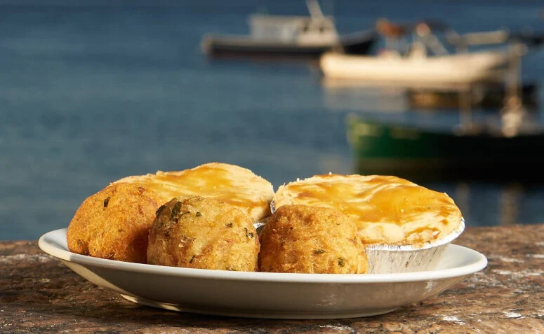
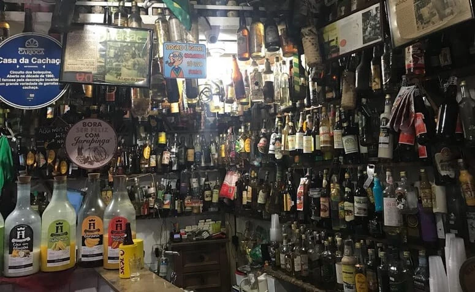

Cidade Maravilhosa
O Rio de Janeiro é um destino incrível, conhecido por suas belezas naturais, arquitetônicas e culturais.
Os principais passeios incluem visitar o Cristo Redentor para uma vista panorâmica incrível e o Pão de Açúcar para um pôr do sol deslumbrante.
As praias de Copacabana e Ipanema são ideais para relaxar e desfrutar do calor carioca, com noites animadas.
O bairro da Lapa oferece vida noturna agitada e boa música brasileira, além de opções gastronômicas.
O Museu do Amanhã se destaca por sua arquitetura impressionante e foco em sustentabilidade.
O Estádio do Maracanã é um ícone do futebol.
Não se pode esquecer do famoso Carnaval no sambódromo, que representa a alegria do povo.
No final, o Rio de Janeiro é uma cidade especial e inesquecível, garantindo boas energias e experiências memoráveis para todos os visitantes.
Bar Urca
Um Patrimônio Cultural Carioca com 80 anos de história, pertinho do Morro da Urca. Vá com calma para desfrutar as delícias com um toque especial da culinária portuguesa, como os premiados pasteizinhos e empadinhas.
Mas, além disso, o visual do bar é imbatível: ele fica às margens da Baía de Guanabara, com vista para o Cristo Redentor.
Se você não quiser esperar uma mesa, também é possível pegar sua cerveja e seu petisco e se sentar para bebericar na Mureta da Urca. Aproveite para assistir ao pôr do sol, um programa tipicamente carioca.
Casa da Cachaça
A primeira cachaçaria do Rio de Janeiro e está de portas abertas desde 1960, sendo também considerada um Patrimônio Cultural.
Como o nome já entrega, a cachaça é o carro-chefe: ao todo, são servidos mais de 200 tipos diferentes da bebida, acompanhadas por um cardápio com petiscos típicos.
No menu, estão cachaças raras e também as de sabores especiais, como de jambu, pistache, gengibre, jurupinga e a famosa Gabriela com cravo, canela e melado de cana.